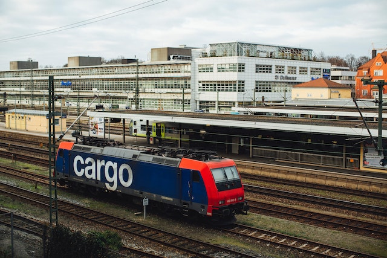
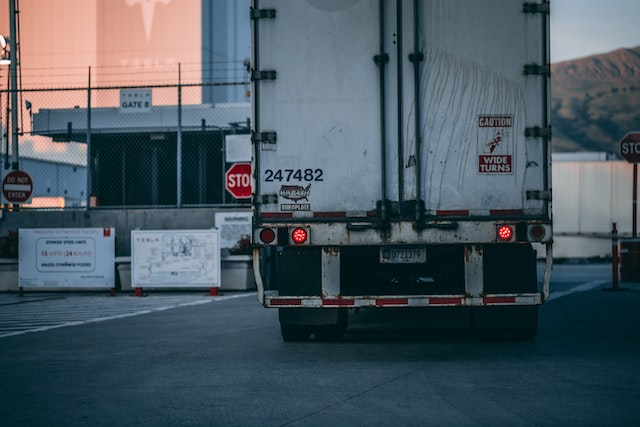
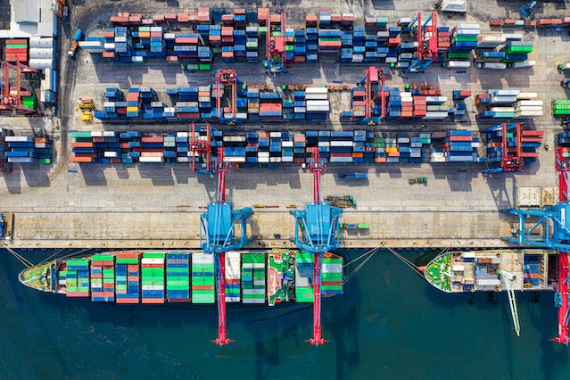
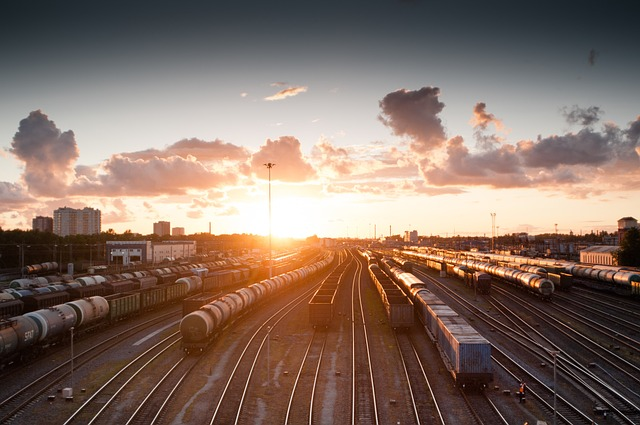
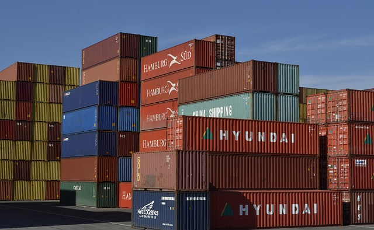

-

Morocco: strengthening logistics
The North African country has increased its role as a global logistics platform, offering world-class...
READ MORE
-

Road logistics price index up in February
Which mainly measures bulk commodity and regional transportation, rising 3.6 percent...
READ MORE
-

EARTH Logistics
EARTH Logistics Growing Sustainable Supply Chains for Shippers with Launch of EARTH SC
READ MORE
-

Shift from road to rail and sea will reduce the cost of transport
The logistics and transportation industry is poised for growth and innovation in the coming years, as companies look to optimize their operations...
READ MORE
-

Greening road transport: EARTH members adopt key positions
Coming together for their biannual meetings, EARTH’s EU passenger and goods transport members have adopted key sector positions...
READ MORE
-

Belarus, Iran agree on permit-free system of road transportation
The parties signed a protocol to establish a permit-free procedure for international road freight ...
READ MORE

NEWS&
VIDEOS
From your favourite logistics company!